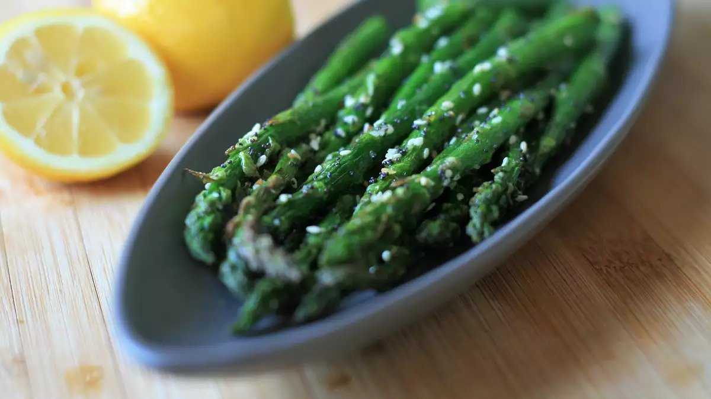

"Everything" Seasoning Air Fryer Asparagus

Description
"Everything" bagel seasoning isn't just for bagels - it's also delicious on asparagus!
Certain bagel seasoning brands are saltier than others, so hold off on adding salt until the end, if needed.
Ingredients
- 1 pound thin asparagus
- 1 tablespoon olive oil
- 1 tablespoon everything bagel seasoning
- 1 pinch salt to taste
- 4 lemon wedges
Steps
- Rinse and trim asparagus, cutting off any woody ends. Place asparagus on a plate and drizzle with olive oil.
- Toss with bagel seasoning until evenly combined. Place asparagus in the air fryer basket in a single layer. Work in batches if needed.
- Heat the air fryer to 390 degrees F (200 degrees C).
- Air fry until slightly soft, tossing with tongs halfway through, 5 to 6 minutes. Taste and season with salt if needed. Serve with lemon wedges.